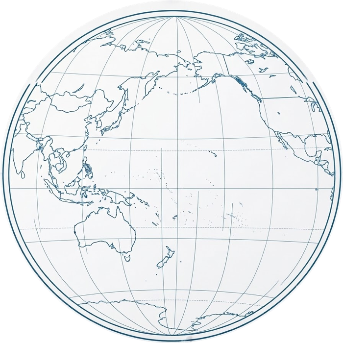

Tokyo · London · Jingdezhen · San Francisco
Four Years.
Traveling the world and learning from others.

TOKYO
SENSHU CRAFT 01 / 04 ·
Tokyo
I learned under master potter Chiaki Fujisaki (藤崎 千秋) who patiently taught me fundamentals w/ a focus on traditional Japanese kurinuki (くり抜き).
HOVER OR TAP TO ADVANCE